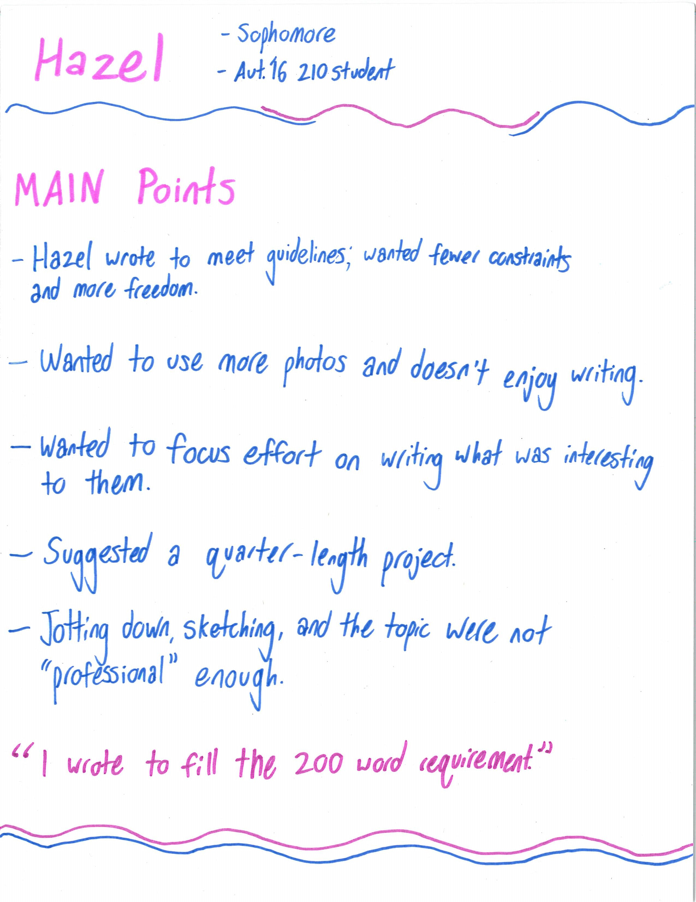
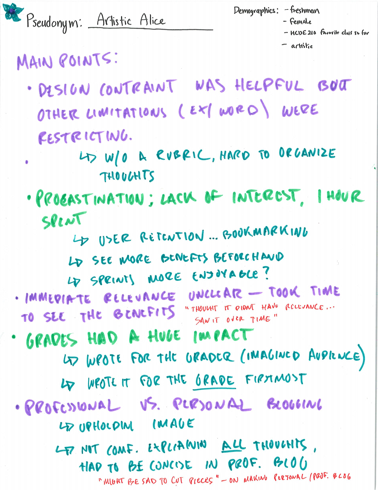
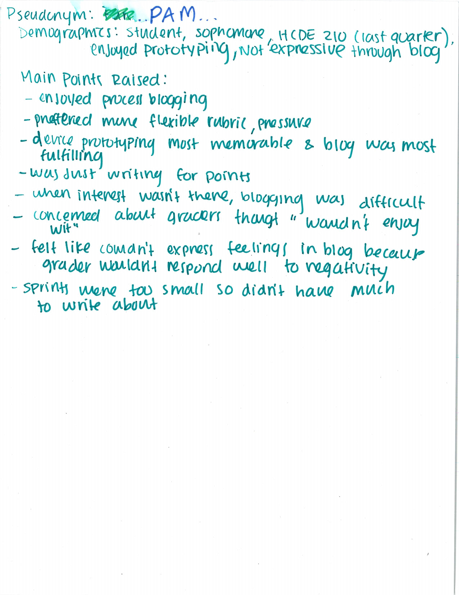
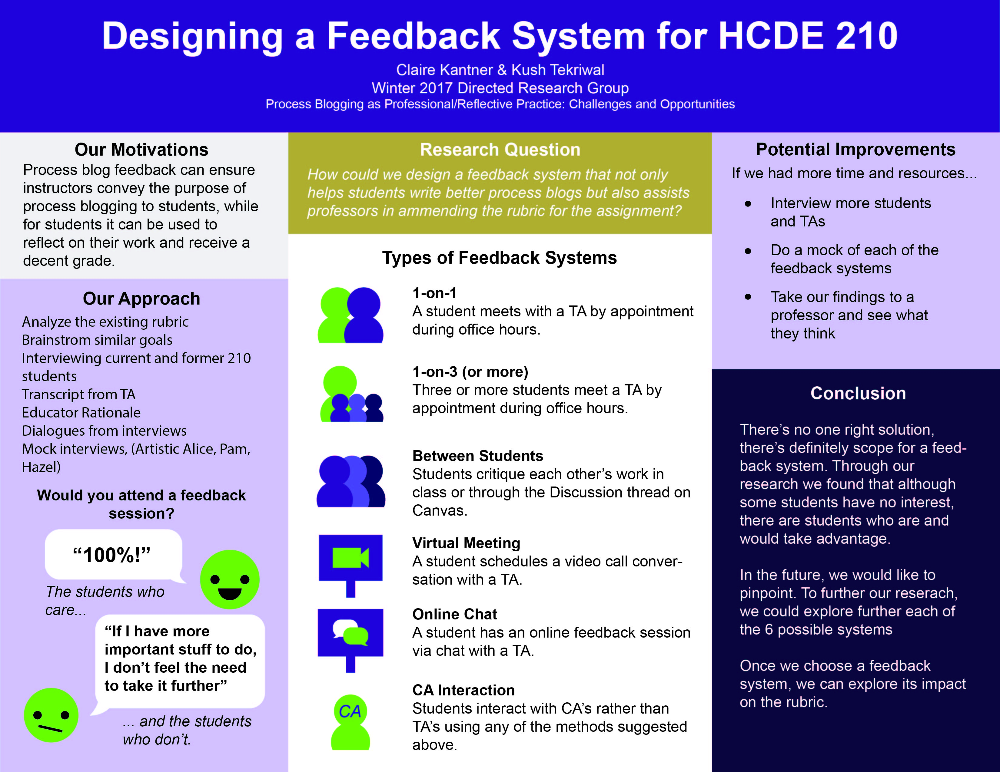

Process Blog Research
My first research experience
Intro
This is it luigi
Research



We grouped together and wrote down the main points from each interview
We interviewed three different students who had experienced the HCDE 210 class. After, we deduced main points
to help inspire new directions to take our projects.
Final Poster

Our feedback system proposals in a poster, designed by me.
I designed this poster to showcase the insights from our interviews
My project partner: Kush Tekriwal
Takeaways
"Coming into the class on day one, I knew I found my place. I loved the collaborative environment we had in our little classroom
with our small group. It almost seemed informal. This is a common theme I noticed throughout the research group:
where should one draw the line between professionalism and informalism? This question pertains to both in processing blogs and
in design spaces. Some groups in the DRG did research on different mediums that may make the process blog writing experience
less intimidating for students, such as adding photos, or using other websites like Youtube and Facebook. My research was
about creating an environment that helps students and teachers learn from each other, and I can’t help but make this connection,
as every day seemed both fun and informative. There was never a moment where I felt like my ideas were shot down, and
yet we held each other accountable to do our best work. At the end, I felt like I was able to learn a lot, not only about process
blogs and the class design, but about myself, and which environment I thrive best in."